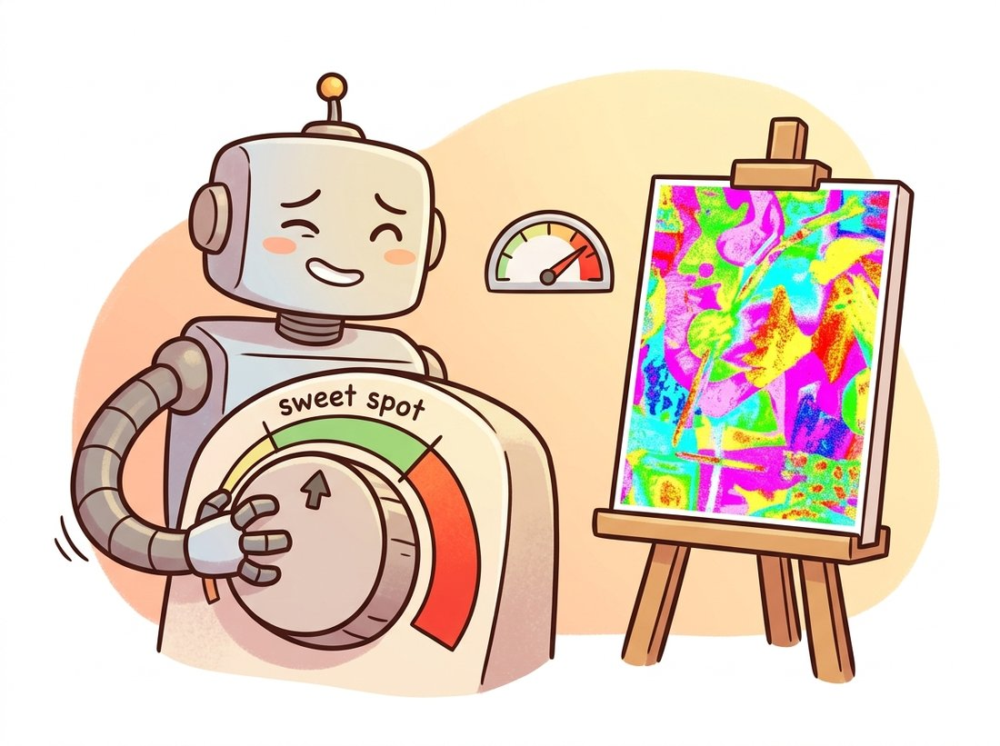

"You wrote 'beautiful'. I have seen four hundred million captions and 'beautiful' described all of them. Tell me the lens, the light, and the hour, and I will stop guessing. Adjectives are not instructions; they are wishes."
A Diffusion Model Begging for Specificity
Prompt engineering is not incantation; it is steering the conditioning vector and the guidance machinery you now understand from the inside. Every effective prompting technique maps onto a concrete mechanism: prompt structure shapes which tokens cross-attention attends to, weighting scales token embeddings, negative prompts replace the unconditional branch of classifier-free guidance, and guidance scale sets how hard the model is pushed toward the prompt. This section makes those mappings explicit, so you debug prompts with a model of the system rather than folklore, and it gives a systematic procedure for the prompt that refuses to cooperate.
With the token-based detour of Section 34.4 behind us, we return to the conditioned diffusion pipeline that the rest of the chapter assumes. Having built that system in Section 34.2, we can now explain prompting mechanically. Most online prompt advice is a pile of superstitions ("add 'trending on artstation'") that occasionally works for reasons nobody states. This section replaces the superstition with the mechanism: what each prompt manipulation does to the conditioning sequence and the guided denoising loop, so that you can predict an effect instead of discovering it by trial and error.
1. Prompt Structure Is Attention Structure Beginner
Recall from Section 34.2 that cross-attention lets every spatial location attend over the prompt's tokens. The practical consequences follow directly. Concrete nouns and adjectives create strong attention targets; vague abstractions ("beautiful", "amazing") create weak, diffuse ones because their embeddings are not specific enough for any region to attend to confidently. A workable prompt names the subject, then its attributes, then the setting, then the rendering style, in roughly that priority order, because earlier and more concrete tokens compete more successfully for attention. For CLIP-conditioned models, the 77-token truncation of Section 34.1 means front-loading the important content; for T5-conditioned models that constraint relaxes and full sentences work better than keyword soup.
A useful template, valid across systems, separates four roles: subject (what), attributes (which color, material, count), scene (where, when, lighting), and style (medium, lens, artist or aesthetic). Naming all four reduces the model's freedom to fill gaps with its training-set average, which is what "beautiful" leaves it free to do. The memory hook is four letters: SASS, subject, attributes, scene, style.
The legendary "trending on artstation" suffix actually worked on early Stable Diffusion, and for a perfectly mechanical reason: the training set scraped a lot of polished concept art whose captions literally contained that phrase, so the tokens became a reliable attention target for "make it look like a professional digital painting". It was never magic; it was a caption statistic. As models moved to cleaner, recaptioned training data, the incantation faded, which is the most honest possible demonstration that a prompt token's power is exactly the correlation it had in the training captions, no more and no less.
An underspecified prompt is not a blank canvas; it is an instruction to return the average of everything matching the few words you gave. "A car" returns the centroid of all training cars: a silver-grey three-quarter-view sedan, because that is the dataset's mean. Every specific token you add ("a 1968 red convertible, low angle, wet asphalt, neon reflections") pulls the sample off that centroid toward the image you actually want. Prompting is the act of overriding the model's prior with evidence, exactly the posterior-versus-prior tradeoff the guidance scale of subsection 3 controls globally.
2. Weighting and Negative Prompts Intermediate
Two interventions act below the level of word choice. Prompt weighting scales the embedding of specific tokens so they exert more or less pull. Tools expose syntaxes like (red:1.4), which multiplies the contribution of the "red" token embedding by 1.4; under the hood this rescales that token's vectors in the conditioning sequence before cross-attention, so the affected spatial positions weight it more heavily. Negative prompts are subtler and more powerful: they replace the unconditional branch of classifier-free guidance. Recall the guidance formula from Section 34.2,
$$ \hat{\epsilon} = \epsilon_\theta(z_t, t, \varnothing) + s\,\big(\epsilon_\theta(z_t, t, c) - \epsilon_\theta(z_t, t, \varnothing)\big), $$
where $\varnothing$ is the empty (unconditional) prompt and $s$ is the guidance scale. A negative prompt replaces $\varnothing$ with the embedding of what you do not want. The guidance term then pushes the sample away from the negative prompt and toward the positive one in the same stroke. This is why "blurry, low quality, extra fingers" as a negative prompt works: it does not describe the image, it defines the direction the guidance steers away from. Understanding negative prompts as the unconditional branch, rather than as a magic exclusion list, tells you exactly why a too-aggressive negative prompt can distort the image (it bends the guidance vector too far) and why an empty negative prompt is just standard classifier-free guidance.
import torch
from diffusers import StableDiffusionXLPipeline
from compel import Compel, ReturnedEmbeddingsType
pipe = StableDiffusionXLPipeline.from_pretrained(
"stabilityai/stable-diffusion-xl-base-1.0",
torch_dtype=torch.float16).to("cuda")
# Compel parses weighting syntax into rescaled conditioning embeddings.
compel = Compel(
tokenizer=[pipe.tokenizer, pipe.tokenizer_2],
text_encoder=[pipe.text_encoder, pipe.text_encoder_2],
returned_embeddings_type=ReturnedEmbeddingsType.PENULTIMATE_HIDDEN_STATES_NON_NORMALIZED,
requires_pooled=[False, True])
prompt = "a (vintage red:1.4) bicycle against a (weathered blue:1.2) wall"
embeds, pooled = compel(prompt)
image = pipe(
prompt_embeds=embeds, pooled_prompt_embeds=pooled,
negative_prompt="blurry, low quality, distorted, extra wheels",
guidance_scale=7.0, num_inference_steps=30).images[0]compel library parses the (vintage red:1.4) syntax and rescales the corresponding token embeddings before they reach cross-attention; the negative_prompt replaces the unconditional branch of the guidance formula above. The model is now pushed toward the weighted positive concepts and away from the listed defects.The weighting in that prompt is not cosmetic: multiplying the "red" embedding by 1.4 measurably increases how strongly the wheel-and-frame region attends to it, which is the attention mechanism of subsection 1 turned into a continuous dial.
3. Guidance Scale: The Fidelity-Diversity Dial Intermediate
The single most consequential knob is the guidance scale $s$ in the formula above, exposed as guidance_scale. At $s = 1$ the conditional and unconditional terms cancel into a plain conditional sample: maximally diverse, loosely tied to the prompt. As $s$ rises, the sample is pushed harder along the conditional direction: tighter prompt adherence, less diversity, and beyond roughly $s = 12$ to $15$ for many models, visible artifacts (oversaturation, contrast blowout) as the guidance overshoots. The sweet spot for most diffusion models is $s = 5$ to $8$. Figure 34.5.1 sketches the tradeoff.
As Figure 34.5.1 shows, $s$ is not a quality dial that goes to eleven; it is a tradeoff, and pushing it past the sweet spot trades adherence gains for artifacts. Distilled and rectified-flow models (FLUX, SDXL Turbo from Section 34.3) shift this curve: some are trained to need little or no classifier-free guidance, so their best $s$ is near 1, a reminder that the right value is model-specific. The illustration below shows what over-cranking looks like: the needle pinned in the red and the painting gone neon and crunchy.

4. Seeds, Reproducibility, and Systematic Iteration Beginner
The initial latent noise (Section 34.2, step 2) is drawn from a random generator. Fixing its seed makes generation deterministic, which is the foundation of disciplined prompt iteration: change one thing at a time against a fixed seed so the effect is attributable. Changing the prompt and the seed together is how you convince yourself a useless prompt edit helped, because a lucky new seed did the work. The professional workflow is to fix the seed while tuning the prompt, then sweep seeds once the prompt is right to find the best sample.
import torch
from diffusers import StableDiffusionXLPipeline
pipe = StableDiffusionXLPipeline.from_pretrained(
"stabilityai/stable-diffusion-xl-base-1.0",
torch_dtype=torch.float16).to("cuda")
prompt = "a lighthouse on a cliff at storm, dramatic clouds, cinematic"
# Fixed seed: isolate the effect of a single prompt or guidance change.
g = torch.Generator("cuda").manual_seed(42)
a = pipe(prompt, guidance_scale=5.0, generator=g).images[0]
g = torch.Generator("cuda").manual_seed(42) # SAME seed
b = pipe(prompt, guidance_scale=9.0, generator=g).images[0]
# a vs b now isolates guidance_scale alone; the noise is identical.
# Seed sweep: once the prompt is locked, find the best sample.
best = [pipe(prompt, guidance_scale=6.0,
generator=torch.Generator("cuda").manual_seed(s)).images[0]
for s in range(8)]manual_seed(42) so the only variable between a and b is the guidance scale, making the comparison valid. The second block sweeps seeds 0 through 7 after the prompt is finalized to pick the best of eight samples. Never vary the prompt and the seed at the same time.That fixed-seed discipline is the difference between prompt engineering and prompt superstition. The first block is a controlled experiment; the second is the production search. Conflating them is the most common way practitioners fool themselves into believing a meaningless prompt token mattered.
You do not need compel for the common cases. The pipeline accepts negative_prompt directly, and several pipelines parse weighting syntax natively.
image = pipe(
"a (golden:1.3) retriever puppy on a beach, soft morning light",
negative_prompt="blurry, deformed, watermark, text",
guidance_scale=6.5,
num_inference_steps=30).images[0]negative_prompt argument and the inline (golden:1.3) weight rather than a separate compel pass. For most work this covers prompt steering without an extra library; reach for compel only when you need fine-grained per-token weighting beyond what the pipeline parses.Who: A marketing team generating hero images of people using a product, on a tight deadline, with SDXL.
Situation: Roughly a quarter of generations had malformed hands (six fingers, fused digits), and the team was hand-rejecting and regenerating, burning time and GPU budget.
Problem: They first tried adding "perfect hands, five fingers" to the positive prompt, which barely helped, because, as subsection 1 explains, the model has no strong attention target for the abstract concept of correct anatomy. They were prompting the wrong branch.
Decision: Guided by the negative-prompt mechanism of subsection 2, they moved the anatomy terms to the negative prompt ("deformed hands, extra fingers, fused fingers, mutated") so guidance steered away from the failure mode, lowered guidance scale from 11 to 6.5 (subsection 3) to stop over-guidance from amplifying artifacts, and, for the worst cases, switched to a FLUX base whose training largely fixed hands (Section 34.3).
Result: The malformed-hand rate dropped from about 25 percent to under 5 percent on SDXL, and to near zero on FLUX. The mechanism told them which branch to edit; trial and error had been editing the wrong one.
Lesson: Match the intervention to the mechanism. "Avoid X" belongs in the negative prompt (the unconditional branch), not the positive one, and a too-high guidance scale amplifies the very artifacts you are fighting. Knowing the formula in subsection 2 turns a frustrating guessing game into two correct edits.
Prompting itself is being automated and superseded in 2024 to 2026. DALL-E 3 and the native-generation multimodal models (Section 34.4) rewrite a user's terse prompt into a long descriptive caption with an LLM before generation, which is why they tolerate sloppy prompts the open models punish; the prompt engineering is done for you by a language model that learned the descriptive-caption style from DALL-E 3's recaptioning insight. Automatic prompt optimization (Promptist and related work) trains a model to rewrite prompts toward higher-scoring outputs. Regional prompting and attention-control methods (the cross-attention manipulation of Chapter 35) let you bind different prompts to different image regions, sidestepping the global-prompt ambiguity entirely. The skill is shifting from wording incantations to specifying intent that a system translates, but the underlying mechanisms in this section are exactly what those systems automate.
For each prompting move, state precisely which part of the system it manipulates (cross-attention targets, token embedding scale, the unconditional guidance branch, the guidance scale, or the initial noise): (a) adding "shot on 85mm lens, f/1.8"; (b) writing (neon:1.5); (c) adding "cartoon, sketch" to the negative prompt; (d) raising guidance_scale from 6 to 10; (e) reusing seed 42. Then explain why "perfect anatomy" in the positive prompt is mechanistically weaker than "deformed" in the negative prompt for fixing bad hands.
Holding the prompt and seed fixed, generate one image at each guidance scale in {1, 3, 5, 7, 9, 12, 16, 20} and tile them with the scale labeled under each. (a) Identify by eye where prompt adherence saturates and where artifacts begin, and compare to Figure 34.5.1. (b) Compute CLIP similarity (the probe from Section 34.1) between each image and the prompt, and plot it against the scale: does adherence really keep rising or does it plateau? (c) Repeat on a distilled model (SDXL Turbo or FLUX schnell) and explain why its best scale is so much lower.
Take a prompt that fails a specific requirement (for instance, "a green teapot to the left of a red mug" where the model swaps the colors or the positions). Work the systematic procedure: (a) probe the encoder with CLIP to check whether the binding is even represented (Section 34.1); (b) if it is not, try a T5-conditioned model; (c) try prompt weighting on the swapped attribute; (d) try regional or attention-control methods. Record which step fixed it, and write a short decision tree that a teammate could follow for the next uncooperative prompt.